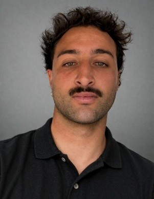

Fernan Nolasco
Técnico Superior en Proyecto y Construcción de Obra · Especialista en Steel Frame
"Precisión en cada perfil, integridad estructural en cada diseño. Transformando el acero frío en espacios de vida cálidos a través de la maestría técnica."

Perfil Profesional
Con más de 10 años de experiencia especializada en sistemas Steel Frame, cierro la brecha entre los requisitos de ingeniería complejos y la ejecución práctica en la construcción.
Mi experiencia abarca el ciclo de vida completo de un proyecto, desde el modelado estructural avanzado y los cálculos técnicos hasta la meticulosa dirección de las operaciones en obra.
Me dedico a optimizar el rendimiento estructural asegurando la eficiencia de costos a través de una logística de suministros estratégica y documentación técnica precisa para proyectos residenciales y comerciales de alta gama.
Capacidades Principales
Servicios de Estudio Técnico
Consultoría Técnica
Asesoramiento estratégico sobre sistemas constructivos, viabilidad de materiales y cumplimiento normativo para proyectos estructurales.
Modelado Estructural
Ingeniería avanzada de Steel Frame utilizando metodologías BIM para planos de taller precisos y guías de montaje.
Dirección de Obra
Supervisión total de las fases de construcción, garantizando el cumplimiento riguroso de las especificaciones técnicas y estándares de calidad.
Logística de Suministros
Coordinación de adquisición de materiales, perfilado especializado y cronogramas de entrega de componentes listos para obra.
Portfolio Técnico
Integridad Construida y Diseño Estructural

Ampliación Residencial
location_on San Isidro, AR

Quincho y Salón de Piscina
location_on Nordelta, AR

Modelado Estructural: Estudios
location_on Pilar, AR
Ver el Registro Técnico Completo
Explora reportes de cálculo detallados, planos de taller y diarios de obra de nuestros últimos proyectos.
Iniciar una Consulta
Ya sea que seas un arquitecto que necesita modelado estructural o un propietario planeando una construcción de alta eficiencia, hablemos de los detalles técnicos.
Email Estudio Técnico
fernanolasco@hotmail.comWhatsApp Directo
WhatsApp open_in_new